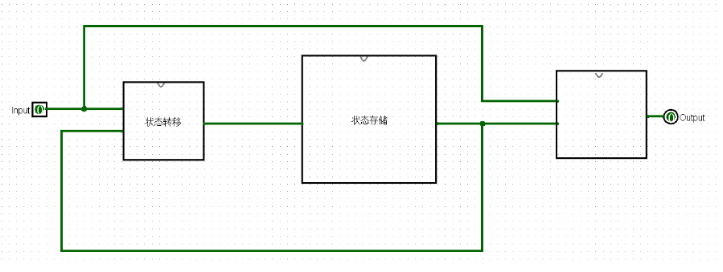

时序逻辑电路的基本元件
SR锁存器
- 功能：清除（R = 1）、置位（S = 1）、保持（R = 0， S = 0）
- 缺点：没有时间上的同步关系


D锁存器
- 功能：高电平时进行储存。本质是电平缓冲器，在一个时钟周期内Q可以随D多次翻转
- 缺点：无法实现时钟沿储存

D触发器
- 功能：时钟沿上升时储存


带使能端的D触发器
- 功能：若使能信号有效则可以正常读入，否则保存当前值而不读入

可置位的D触发器
- 功能：若置位信号有效，则下一个时钟沿到来时触发器只更新为0


多路选择器
- 功能：根据S的值选的输出D0还是D1

有限状态机基本知识
状态机类型
- Moore型：输出信号仅为状态的函数，与输入信号无关（输出晚，有效周期是circle的整数倍）
- Meely型：输出信号是状态与输入信号的函数（输出早，有效时间可能更短）
设计步骤
- 确定输入和输出
- 画出状态转移图（注意所有可能的情况以及复位操作）
- 为状态编码（独热码or二进制码）
- 列出状态转移表和输出表
- 将真值表转化为表达式
- 连接电路
设计要点
-
初始状态
状态机必须指定一个初始状态，以确保系统在上电后处于确定的状态 -
复位信号
复位信号的作用是将状态机强制初始化为初始状态,包括同步复位和异步复位。 -
状态编码方式
- 二进制编码：log2𝑁个触发器表示N个状态,节省逻辑资源，但可能产生毛刺
- 格雷编码：log2𝑁个触发器表示N个状态，但相邻状态编码值只有1位不同,节省逻辑资源,又避免产生毛刺（状态顺序的转换中有效）
- 一位热码编码（One-Hot Encoding）：N个触发器表示这N个状态,资源消耗多，但无毛刺,降低次态逻辑和输出逻辑复杂度，有利于提高时钟频
logisim中有限状态机的实现
总体来说，使用 Logism 设计有限状态机的过程基本上可以分为三个步骤：
- 设计实现状态存储模块
- 设计实现状态转移模块
- 设计实现输出模块
其中，状态转移模块和输出模块内是纯组合逻辑，不涉及时序逻辑；状态存储模块则需要存储每个周期有限状态机的具体状态。
两种状态机的状态转移和状态存储模块的设计方法基本一致：
状态转移模块根据当前有限状态机的状态(即状态存储模块所存储的值)和当前的输入计算出有限状态机的下一状态值，当时钟上升沿到来时，这个新的状态值被存入状态存储模块中。
两种状态机的不同之处在于输出模块对输入数据的要求：
- more型有限状态机的设计

- mealy型有限状态机的设计

verilog中有限状态机的实现
在 Verilog HDL 中可以用许多种方法来描述有限状态机，最常用的方法是用 always 语句和 case 语句。下面具体说明用 Verilog 设计有限状态机的一般步骤：
-
逻辑抽象，得出状态转换图。
-
状态化简（该步骤可以省略），如果在状态转换图中出现两个一样的状态则需要将其合并为一个状态，以得到最简的状态转换图。
-
状态分配，也就是状态编码。通常有很多种编码方式，比如 Gray 编码、独热编码等。在实际电路中，需综合考虑电路复杂度与电路性能之间的折中。这里的设计没有用到特别复杂的电路逻辑，所以大家可以自行决定用哪种编码方式。（不过，对于需要在FPGA上运行的电路，推荐使用独热编码方式。因为 FPGA 有丰富的寄存器资源，门逻辑相对缺乏，采用独热编码可以有效提高电路的速度和可靠性，也有利于提高器件资源的利用率。）
-
根据状态转移图得出次态逻辑和输出逻辑。
-
按照相应逻辑，用 Verilog HDL 来描述有限状态机状态转移的情况。 要注意同步复位和异步复位的不同， 尽量用 case 或 if-else 语句描述出状态的转移。
设计建议
- 一般用case、casez 或 casex语句进行状态判断，比用 if-else 语句更加清晰明了。
- 在 case 语句的最后，要加上 default 分支语句，以避免锁存器的产生。
- 状态机一般应设计为同步方式，并由一个时钟信号来触发。
- 实用的状态机都应设计为由唯一的时钟边沿触发的同步运行方式。